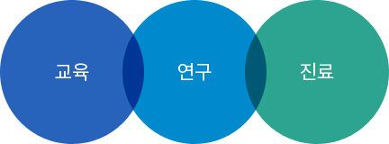

병원개요
서울대학교병원의 어제 오늘 그리고 미래
 지난 한세기 서울대학교병원은 국민의 건강과 생명을 지키고,
지난 한세기 서울대학교병원은 국민의 건강과 생명을 지키고, 우리나라 의학발전을 선도해 왔습니다.
1885년, 한국 최초의 서양식 국립병원인 제중원에서 출발하여 국립서울대학교 의과대학을 거쳐
1978년, 특수법인 서울대학교병원으로 개편해 오늘에 이르고 있습니다.
현재 서울대학교병원은 본원을 비롯한 어린이병원, 암병원 그리고 의생명연구원으로 구성되어 있습니다. 1,751개 병상을
운영하고 있으며 1일 9,000명의 외래환자를 1,800명의 의사 등 8천명의 직원이 돌보고 있습니다.
서울대학교병원은 인류의 건강을 수호하는 세계 속의 병원으로 힘차게 전진해 나가고 있으며,
특히 ‘BreakThrough21 대한민국 의료를 세계로’라는 비전을 선포하고 환자중심의 병원으로 거듭나고자 한뜻으로 매진하고
있습니다.
비전
 01 최상의 진료로 가장 신뢰받는 병원
세계적 첨단진료영역을 지속적으로 확보함으로써 국민과 의료전문가들이 믿고 선택하는 병원이 된다.
02 생명의 미래를 여는 병원건강한 생명의 연장에 필요한 연구를 통하여 세계적 성과를 창출함으로써 의학연구의 지평을 넓힌다.
03 세계 의료의 리더를 양성하는 병원다양한 경험과 창조적 교육을 바탕으로 의료발전을 주도할 세계적인 리더를 배출한다.
04 의료선진화를 추구하는 정책협력병원대한민국 의료시스템의 발전방향을 제시하고 정책협력을 통하여 의료선진화를 견인한다.